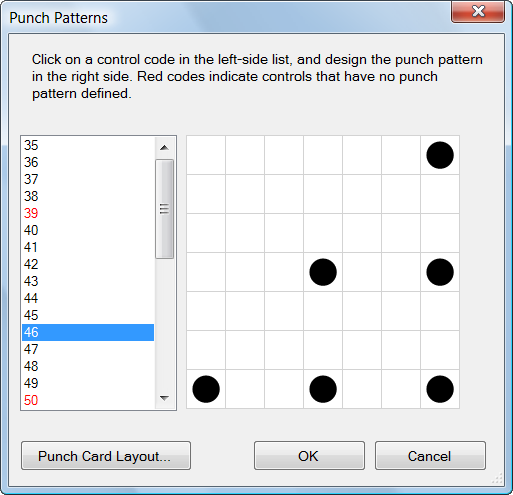

Event/Punch Patterns...
The Punch Patterns command sets the punch pattern for each control. Once set, master punch cards can be printed using the File/Print Punch Cards command.

The control codes for all controls are listed in the list box on the left side of the dialog. If a control has a punch pattern already defined, it is in black; if it has does not have a punch pattern defined yet, it is listed in red. To set or change the punch pattern for a control, click on its code.
Using the mouse, click in the boxes on the right side of the dialog to add or remove pins from the punch pattern for that control.
Punch Card Layout. Click this button to set the printing layout for master punch cards.